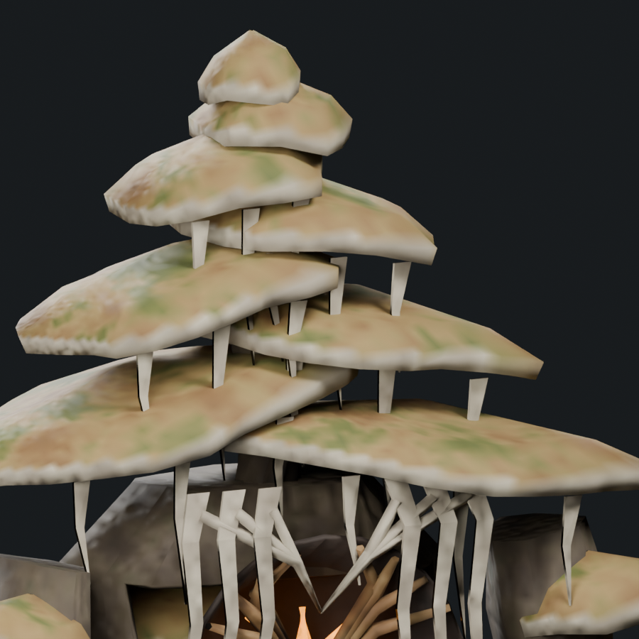
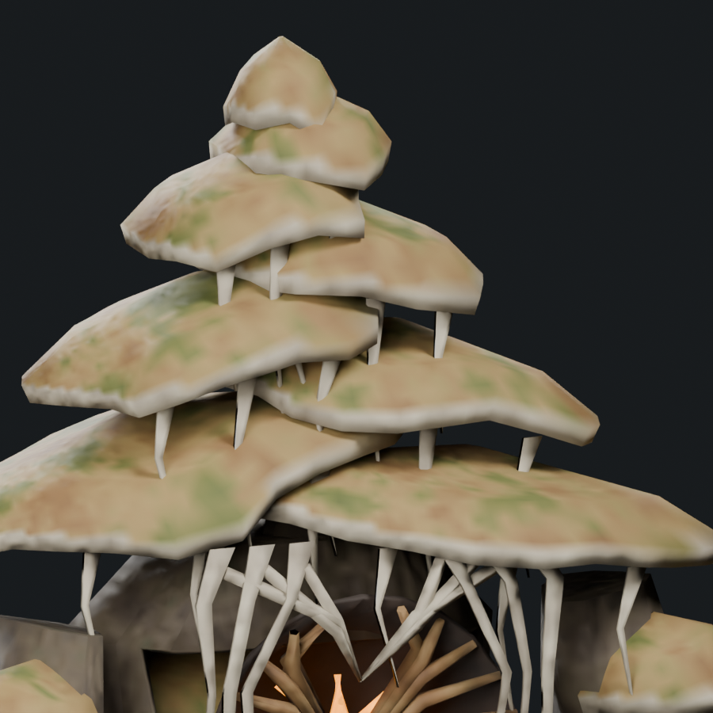
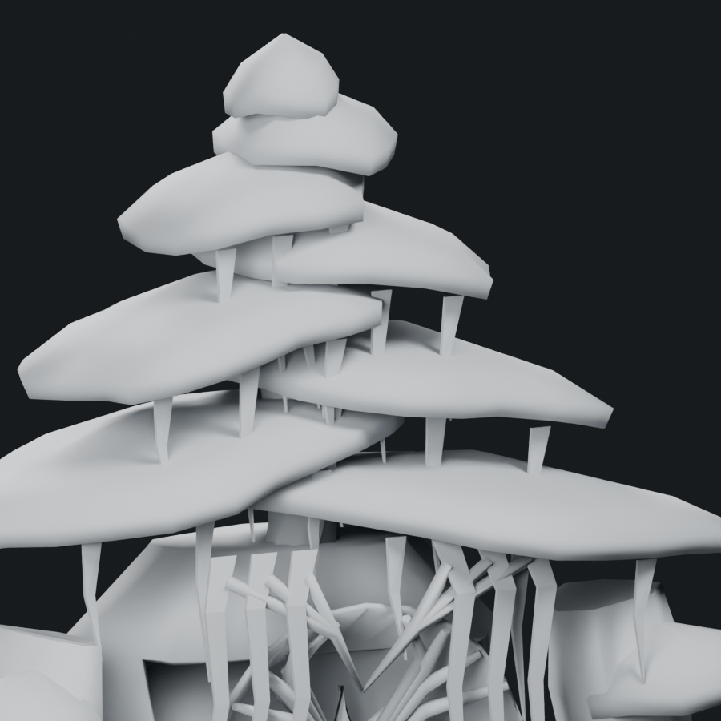
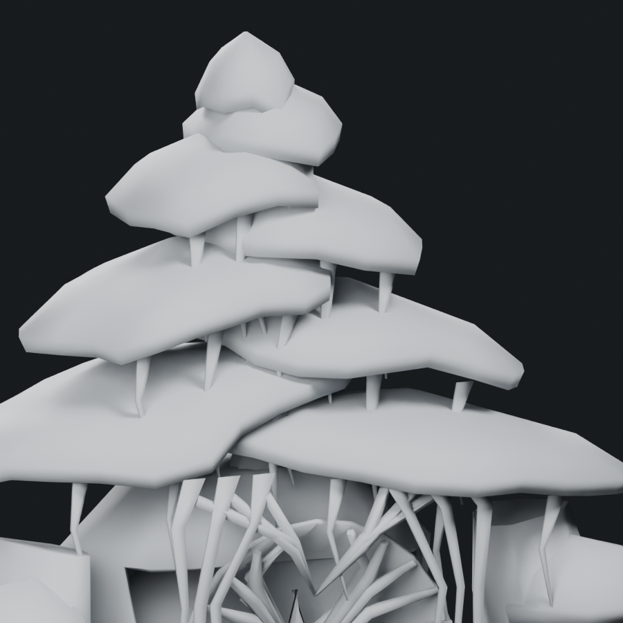
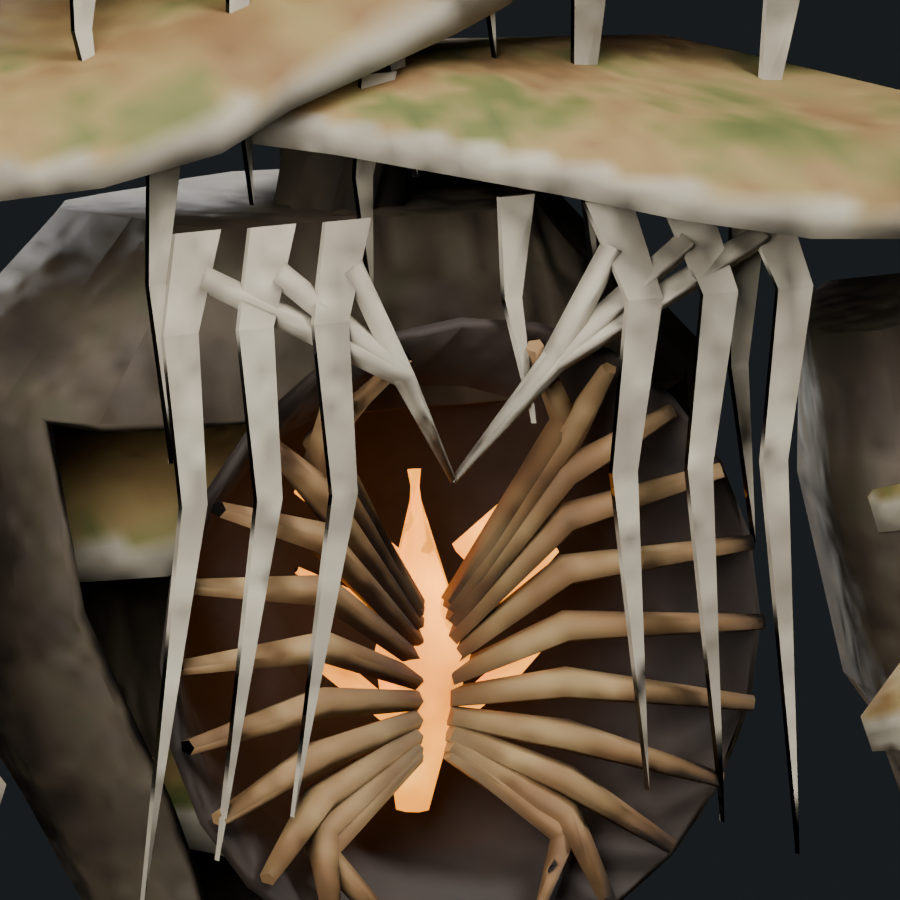
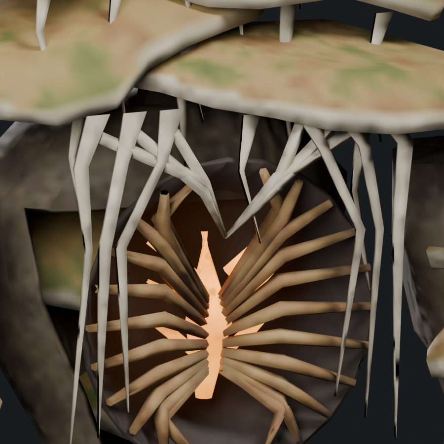
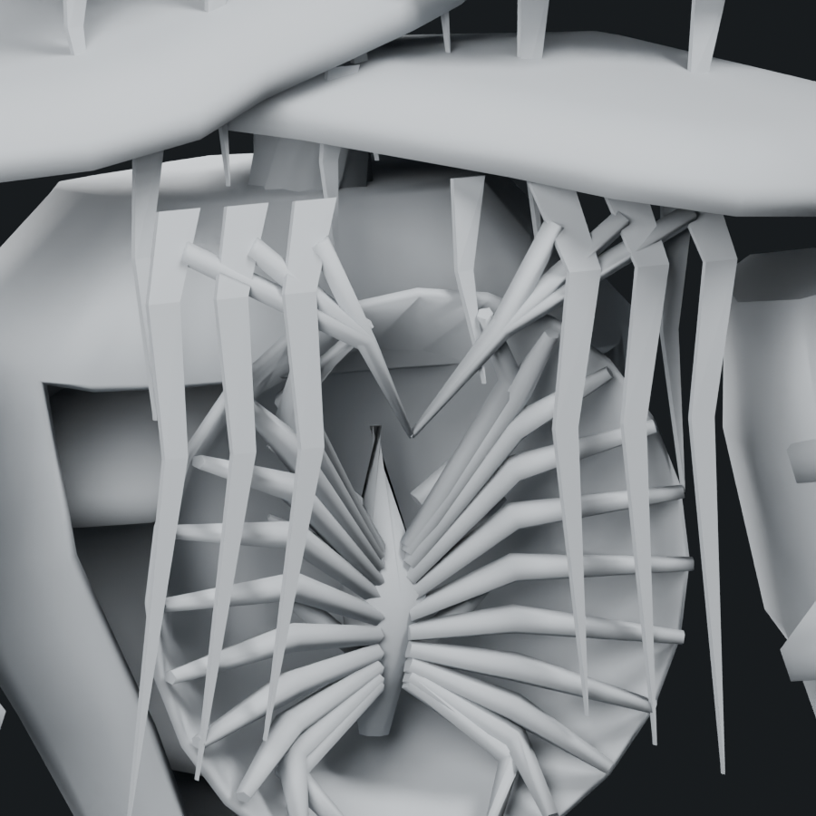
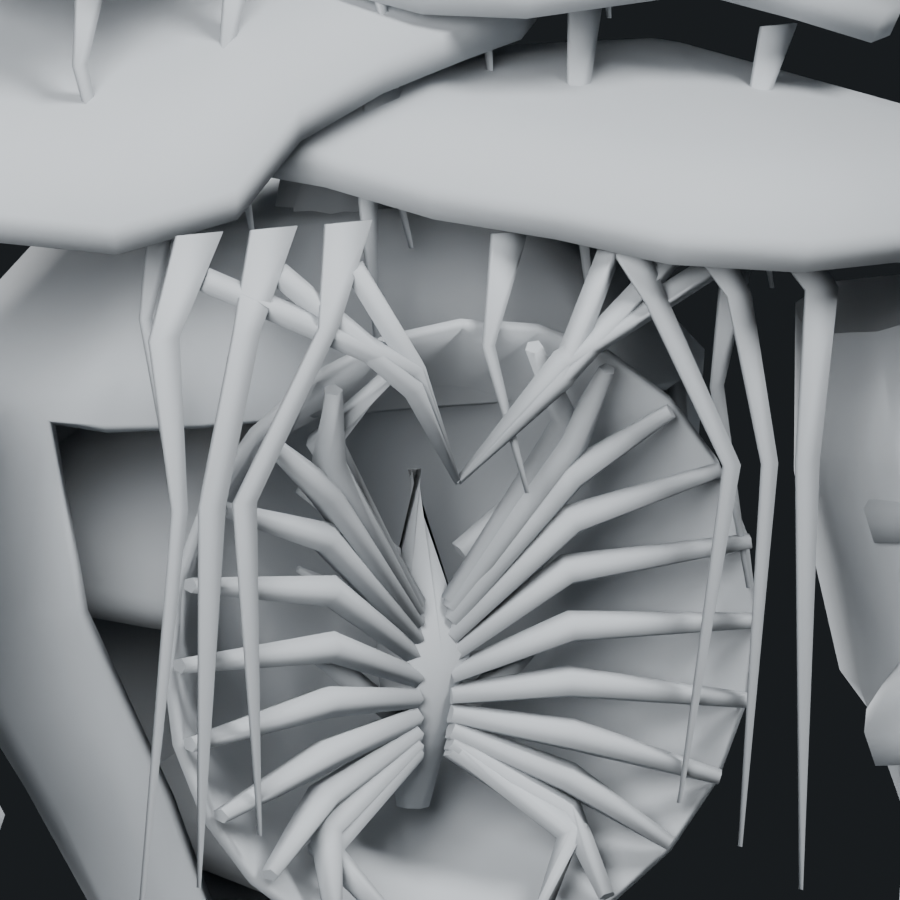

First Bloom: cap and tissue precision pass
Shape changes to the existing geometry. 9,188 triangles, unchanged topology and vertex weights. Still 1.48× Troll, below the 9,309 soft cap; one mesh, one material and four 512px atlas maps.
Drooping caps
Free rims sag most at exposed front lobes. Unequal scallops and radial folds interrupt the flat shelf edges while their centers stay seated. Tissue attachment points follow the altered rim.

Before · textured
After · textured
Before · clay
After · clayTissue frames
Existing rails flare around the chamber, pinch between anchors, twist out of the flat plane and taper toward their lower tips. Crosslinks and ribs have unequal arches. No new branches or polygons were added.

Before · textured
After · textured
Before · clay
After · clayEditable Blender study · Skinned GLB · Inherited attack pose · Record and limitations
Offline integrity, topology/weight parity and sampled pose bounds pass. Tissue branching and fraying remain coarser than the concept. Native deformation, shaders and live performance remain unverified; this study is uninstalled.